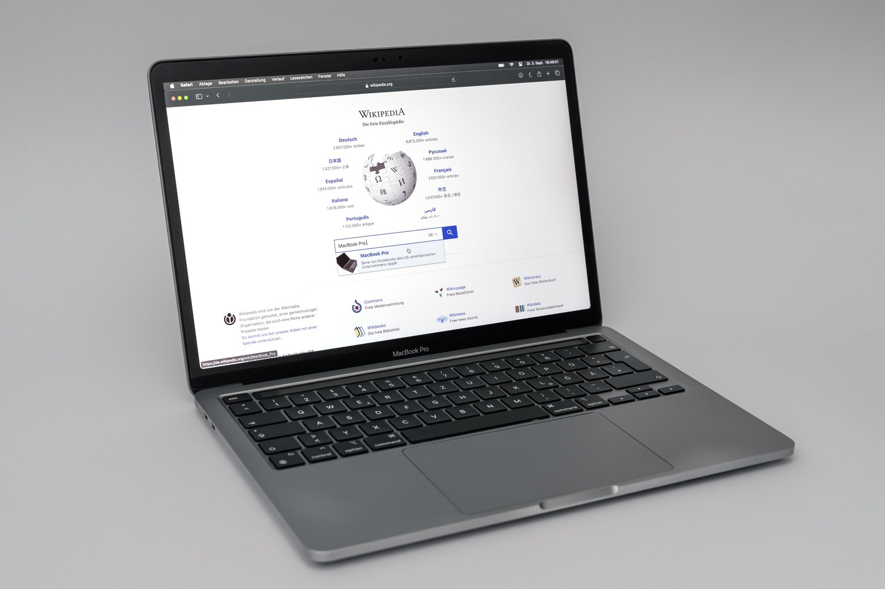

The Autopsy Report · Device #068
The Apple MacBook
Twenty years of aluminum: the MacBook, the MacBook Air, and the MacBook Pro — from the Intel switch to the Apple silicon leap. One representative, a 2020 M1 Pro, stands in for the family. Line history
What is this thing?
"MacBook" is Apple's laptop brand across three lines: the MacBook (the mainstream line, 2006–2012, plus the 12-inch revival of 2015–2019), the MacBook Air (the thin-and-light, from 2008), and the MacBook Pro (the performance line, from 2006). Two processor eras divide the family: Intel (2006–2020) and Apple silicon (2020 onward), when Apple replaced Intel chips with its own M-series processors — the same architectural break, in reverse, as the 2006 switch to Intel. Line history · MacBook 2006–2012
Our representative is the 13-inch MacBook Pro from late 2020 — the first Apple silicon Pro, the one in the photo. It's the hinge of the whole story: the last of the old shape, the first of the new chips. Nothing about its M1, its memory, or its fan applies to the Intel generations — and we don't pretend it does. iFixit teardown via iMore
Not yet on our bench
No MacBook has sat on our bench yet. No disassembly, no Apple Diagnostics run, no battery-health reading, no original-unit photography. Everything below comes from public teardown records, Apple's own support documentation, and hardware histories. When a MacBook lands on the bench, this page gets its second act.
A short history
- 2006Apple switches to Intel. The MacBook replaces the iBook; the MacBook Pro replaces the PowerBook G4. The modern laptop era begins in polycarbonate white and black. T3 history · MacBook 2006–2012
- 2008The MacBook Air debuts — pulled from an envelope on stage — and the unibody aluminum construction arrives, milled from a single block. T3 history
- 2012The Retina MacBook Pro: high-density display, soldered RAM, glued battery — the repairability argument starts here and never really stops. T3 history
- 2015The 12-inch MacBook: one USB-C port, fanless, impossibly thin — and a keyboard design the industry would argue about for years. T3 history
- 2016The Touch Bar MacBook Pro redesigns the Pro around a thin OLED strip — and USB-C-only ports. T3 history
- 2020Apple silicon. The M1 MacBook Air and 13-inch MacBook Pro launch in the old chassis with the new chip — the representative machine of this report — and the performance-per-watt leap resets the whole industry's expectations. T3 history · MacRumors on the iFixit teardown
The outside
The 2020 13-inch Pro looks almost identical to the Intel machine it replaced — same aluminum unibody, same 13.3-inch Retina display, same keyboard with the Touch Bar above it, same two or four Thunderbolt/USB-C ports depending on configuration, same Touch ID power button. That's the point Apple was making: the revolution is inside. The ports are fewer than the old days (no MagSafe on this generation, no SD slot, no HDMI — those would return on later redesigns), and everything is USB-C. iFixit teardown via iMore

The board
Open the M1 Pro and the logic board is startlingly small — the M1's integration swallowed what used to be a dozen chips. The public teardown record documents: the Apple M1 package itself (CPU, GPU, Neural Engine, and memory controller on one die), an 8 GB configuration built from two 4 GB SK hynix LPDDR4X packages sitting beside the SoC (unified memory — the RAM lives next to the processor, not in slots), and a single fan cooling the 13-inch Pro (the M1 Air is fanless; the Intel 13-inch Pro it replaced had two). Storage is soldered flash. The battery, speakers, and display are the other big assemblies — and the teardown's headline, beyond the chips, was how familiar it all looked: Apple changed the silicon and kept the machine. iFixit teardown via iMore · MacRumors
Under the microscope: the chips
Representative-machine rows only — none of this applies to Intel MacBooks. Confirmed means the public teardown record documents it directly.
| Chip | What it does | How we know | Dig deeper |
|---|---|---|---|
| Apple M1 SoC — CPU + GPU + Neural Engine |
The whole computer's compute: processor, graphics, and ML accelerator on one die. | Confirmed iFixit's teardown of the 13-inch M1 Pro. | iFixit teardown via iMore |
| 2× 4 GB SK hynix LPDDR4X 8 GB unified memory |
System memory, packaged beside the SoC — shared between CPU and GPU. Not upgradable. | Confirmed iFixit's teardown identifies the two SK hynix packages. | iFixit teardown via iMore |
| Soldered flash storage | The SSD — part of the logic board, not a replaceable module. | Confirmed iFixit's teardown; consistent with Apple's design since the Retina era. | MacRumors |
| Single fan | Active cooling for the 13-inch Pro (the Air has none). | Confirmed iFixit's teardown counts one fan where the Intel model had two. | iFixit teardown via iMore |
What the public record doesn't give us: the exact power-management and Thunderbolt controller markings, the battery cell supplier, and the display panel source — all bench work, all waiting. MacRumors
The government's file
Honest scope note: there is no family-wide MacBook FCC ID. Every MacBook model carries its own compliance paperwork, and the radios inside (Wi-Fi/Bluetooth modules, which vary by generation and supplier) carry their own module certifications. We don't have a verified ID for the late-2020 13-inch Pro specifically, so we claim none — a bench unit's regulatory label would settle it with a photo. The pattern to remember: with Apple, the filing follows the model, never the family. T3 history
Listening, not knocking
Our posture: we listen, we don't knock. Apple's own diagnostic interface is the documented path: Apple Diagnostics — on Intel Macs, hold D at startup; on Apple silicon Macs, hold the power button to reach startup options, then press Command-D. It tests the hardware and returns reference codes, no disassembly required, no locks defeated. That's a manufacturer procedure, and documenting its existence is the whole of this section. When a MacBook reaches our bench, the plan is exactly that: run Apple Diagnostics, record the reference codes, check battery health in System Settings, and publish the results. Listening only. Apple Support: Use Apple Diagnostics
What we didn't do
- No bench work yet: no disassembly, no diagnostics run, no battery reading, no original-unit photos.
- We claim no FCC ID for any MacBook — none verified for the representative model.
- We did not bypass Activation Lock, firmware passwords, or any other protection — and we never will. Those are anti-theft systems; defeating them is not BareBoard's business.
- Nothing here touches credentials, keys, or user data.
By the numbers
- Family: MacBook (2006–2012; 12-inch 2015–2019), MacBook Air (2008–), MacBook Pro (2006–) T3 history
- Eras: Intel (2006–2020) · Apple silicon (2020–) T3 history
- Representative: 13-inch MacBook Pro, late 2020 — Apple M1, 8 GB unified memory (2× 4 GB SK hynix LPDDR4X), single fan, soldered storage iFixit teardown via iMore
- Diagnostics: Apple Diagnostics — D (Intel) · Command-D from startup options (Apple silicon) Apple Support
What awaits the bench
- A MacBook of our own — model, year, our photos, our measurements.
- An Apple Diagnostics run with published reference codes.
- Battery health and cycle count from a real unit.
- A regulatory-label photo to settle the FCC question for that exact model.
- One day, an Intel-vs-Apple-silicon side-by-side: the two eras on one bench.
Words to know
Every term this page uses, in plain English. No prior knowledge required.
- System on a chip (SoC)
- Processor, graphics, memory controller, and more on one die. The M1 is Apple's laptop SoC.
- Unified memory
- RAM packaged next to the processor and shared between CPU and GPU — fast, and not upgradable.
- Retina display
- Apple's term for a screen dense enough that individual pixels disappear at normal viewing distance.
- Apple Diagnostics
- Apple's built-in hardware test — hold D (Intel) or Command-D (Apple silicon) at startup. Returns reference codes for faults.
- Thunderbolt / USB-C
- The oval ports on modern MacBooks — one connector carrying USB, display, and high-speed data.
- Unibody
- A chassis milled from a single block of aluminum — Apple's construction method since 2008.
- Activation Lock
- Apple's anti-theft system tying a Mac to its owner's Apple Account. We document its existence; defeating it is out of scope, always.
Sources & confidence
- Line history and model years: the T3 hardware history. High confidence.
- MacBook 2006–2012 specifics: the model overview. High confidence.
- M1 Pro internals (M1 package, 2× 4 GB SK hynix LPDDR4X, single fan): iFixit's teardown via contemporary reporting. High confidence.
- Apple Diagnostics procedure: Apple's own support page. High confidence.
- FCC: no verified ID for the representative model — stated as unknown, honestly.
- Anything not listed here is unknown until the bench says otherwise. We'll say so, out loud, when that's the case.
The device photo is a freely licensed stock photo, credited in its caption — not a photo of our own unit, because we don't have one yet.
Legal note. BareBoard is an educational project. Everything on this page is our own writing based on public documents — our summaries, our analysis. We don't publish, host, or distribute firmware, keys, passwords, or credentials. Product names and trademarks belong to their respective owners and appear here only to identify the hardware. If you believe anything here infringes your rights, contact us and we'll address it promptly.